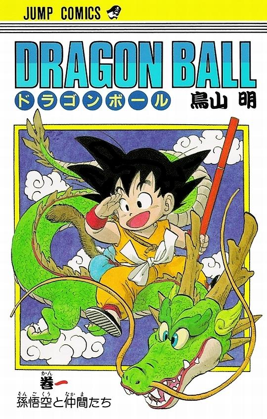

Moje zainteresowanie - Anime
Naruto
Naruto – shōnen manga Masashiego Kishimoto. Była publikowana w magazynie „Shūkan Shōnen Jump” wydawnictwa Shūeisha w latach 1999–2014. Jej główny bohater, Naruto Uzumaki, to nastoletni ninja, który nieprzerwanie szuka uznania i szacunku oraz sposobu na zostanie hokage – przywódcą i jednym z najsilniejszych ninja w swojej wiosce.
Opis fabuły
Dwanaście lat przed wydarzeniami, na których koncentruje się seria, lis-demon o dziewięciu ogonach zaatakował wioskę Konoha. Atak spowodował chaos i śmierć wielu ludzi. Sytuację opanował Czwarty Hokage, który pokonał Dziewięcioogoniastego, poświęcając swoje własne życie i oddając duszę Bogu Śmierci, aby zapieczętować demona wewnątrz nowo narodzonego dziecka – Naruto Uzumaki. Czwarty Hokage po zapieczętowaniu Lisiego Demona został uznany za bohatera.
Zasada ustanowiona przez Trzeciego Hokage zabroniła mieszkańcom osady opowiadać o tamtym zdarzeniu komukolwiek. Naruto dorastał w samotności, bez przyjaciół i rodziny. Szukał uznania i uwagi w jedyny sposób, jaki znał – poprzez popisywanie się i rozrabianie.
Seria śledzi dojrzewanie i rozwijanie umiejętności Naruto i jego przyjaciół, akcentując ich wzajemne interakcje i wpływ przeszłości na ich osobowości. Naruto zaprzyjaźnia się z Sasuke Uchihą i Sakurą Haruno, dwojgiem młodych ninja, którzy razem z nim tworzą trzyosobową drużynę pod dowództwem doświadczonego nauczyciela Kakashiego Hatake.
Największe tajemnice serii to pytania o tożsamość i motywacje postaci. Historia rodziców Naruto, cele, które kierują postępowaniem Kabuto Yakushiego, tożsamość tajemniczego przywódcy Akatsuki.
|
|||
|---|---|---|---|
| Shōnen |  | ||
| Shōnen |  | ||
| Shōnen |  | ||
| Shōnen |  |